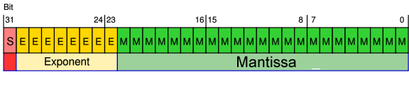
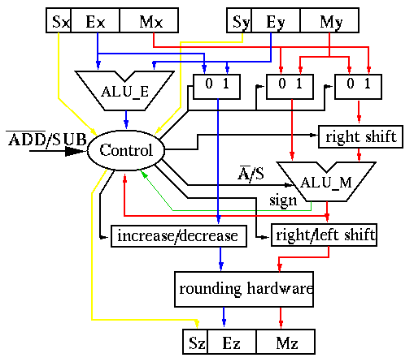

前陣子在幫同事改一段以前的程式的時候發現Javascript在做Float數值的運算時有bug，會導致簡單的計算出問題，當下去找了一下資料有幾個處理方式整理給大家。
Problem Description
在開始前我們直接看下面的範例就知道問題在哪邊
這邊三個簡單的計算，你可以發現前面兩個都正確，第三個結果就怪了。
小學的99乘法表告訴我們99是81，但這個結果的尾數竟然不是1….就知道見鬼了
為什麼Javascript的浮點數計算會有這樣的差異呢？
因為電腦沒辦法正確的顯示0.1,0.2,0.3這樣的浮點數(因為數值都是0101的組成)，所以透過0101組成浮點數時就產生了誤差。我們看到的0.1其實是已經經過進位後的結果(原先可能是0.1000000000000001這樣的值)，所以當我們做運算後就會產生更大的誤差。
對於浮點數的基本組成與相關問題可以參考這篇文章，解釋得非常詳細。
這邊幫大家在Google大神的協助下找了幾張圖來參考。
首先一個簡單的浮點數可以分為兩部分：
而透過二進位表示法(IEEE 754)來存放時則如下：

實際的運算邏輯flow大致可以參考下圖

Solution without plugin
簡單來講我們可以用Number.prototype.toFixed()這個數值型別的function來幫我們確認要計算到多精準的小數位
開始前我們先參考MDN給我們的說明
Method of Number
Implemented in JavaScript 1.5
ECMAScript Edition ECMAScript 3rd Edition
Syntax
number.toFixed( [digits] )
Parameter
digits The number of digits to appear after the decimal point; this may be a value between 0 and 20, inclusive, and implementations may optionally support a larger range of values. If this argument is omitted, it is treated as 0.
Returns
A string representation of number that does not use exponential notation and has exactly digits digits after the decimal place. The number is rounded if necessary, and the fractional part is padded with zeros if necessary so that it has the specified length. If number is greater than 1e+21, this method simply calls Number.toString() and returns a string in exponential notation.
Throws
RangeError If digits is too small or too large. Values between 0 and 20, inclusive, will not cause a RangeError. Implementations are allowed to support larger and smaller values as well. TypeError If this method is invoked on an object that is not a Number.
如上面的說明，由於他是ECMAScript的內建語法所以我們不需要特別用什麼套件，只要確任瀏覽器支援就可以了(目前全部瀏覽器都支援)
我們將剛剛的一開始的三個範例改寫如下
如此一來我們就可以正確地顯示浮點數運算過後的值了。
從解法我們發現如果用 number.toFixed( [digits] )) 這樣的解法需要先知道到底結果是小數點第幾位，但實務上我們有很多情況會不知道該數值到底第幾位.所以可能還要把多算出來的0給處理掉，如下：
Solution using Math.js
這邊介紹一個方便的javascript plugin來幫大家解決數學計算的問題
使用上很簡單，只要記得加上math.js到你的頁面上即可，沒有其他library dependency。
下面就快速的把先前的範例用Math.js呈現給大家看
這邊可以看到透過Math.js我們就可以很簡單地取到精准度為小數點後10位的結果也不會有多餘的0，是不是很方便呢！
其實Math.js還有很多很酷的功能，他也支援Nodejs與其他框架使用，大家趕快把它列入專案必裝的套件吧。
結語
老實說學生時代只有印象中聽過浮點數計算透過二進位儲存有誤差，但我沒想到學問真的很大….也沒想到出社會還會看到這類型問題，也很感謝有遇到這樣的問題讓自已能夠在多收穫一些知識。